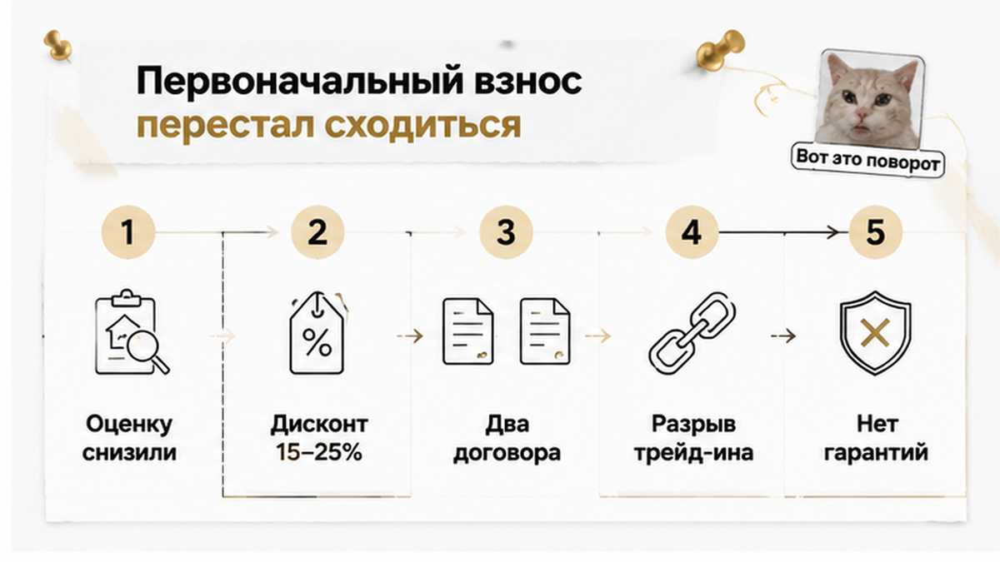
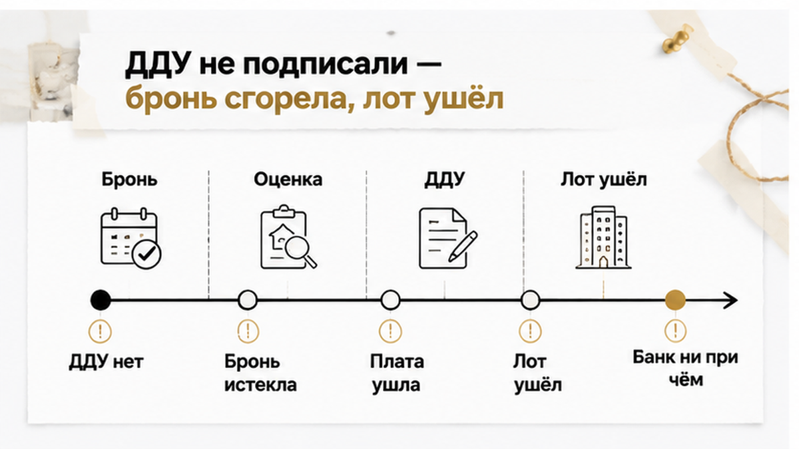

За сутки до подписания ДДУ тюменской семье прислали в мессенджер новую оценку их старой двушки — на 400–600 тыс. ₽ ниже той суммы, которая три недели лежала в расчёте первоначального взноса. Звонок был в среду, в начале шестого: ДДУ стоял на четверг, на одиннадцать утра, у мужа под это отпрошен целый день, у жены — половина. Ипотеку к тому моменту одобрили, лот забронировали и плату за бронь внесли картой, мебель в новой квартире расставляли уже мысленно. Разницу предложили добросить своими деньгами — до конца рабочего дня. Своих денег в такой сумме на руках не было: они и должны были прийти от продажи старой квартиры.
Меня зовут Святослав Шакин, The Риэлтор, Тюмень. Разбираю сделки с новостройками изнутри — с договорами, сроками и тем, что происходит за сутки до подписания. Читать разборы первыми и задать вопрос по своей ситуации: Telegram-канал и MAX.
В рекламе новостроек трейд-ин выглядит как обмен: отдал старое, доплатил, получил новое. В жизни обмена почти никогда нет. Есть две отдельные сделки, которые живут по разным договорам и — что важнее — по разным срокам: покупка новостройки по ДДУ и продажа или выкуп вашей вторички.
Фраза «мы всё берём на себя» означает только одно: процесс организует застройщик или его партнёр. Обязательства остаются в двух бумагах и связаны ровно настолько, насколько это написано.
Схем на рынке три, и деньги у них разные. Партнёрское агентство застройщика оценивает квартиру и берётся её продать или выкупить. Выкупная компания платит быстро, но с дисконтом: скорость всегда чем-то оплачивается. Собственный выкуп застройщика встречается реже всего.
Похожие слова означают разные обязательства. «Поможем продать» и «реализация» — поиск покупателя в срок, без гарантии результата. Срочный выкуп — деньги быстро и ниже рынка. Гарантированный выкуп — в договоре назван конкретный покупатель и его обязанность купить. В баннере все три сжимаются в одно слово «трейд-ин» — там и рвётся ожидание.
У нашей семьи была первая схема. Партнёр посмотрел квартиру, назвал предварительную сумму вслух и продублировал её в расчёте — менеджер распечатал листок прямо в переговорной. По бумажке всё сходилось: выкупная цена двушки закрывала первоначальный взнос, остаток уходил в ипотеку, платёж помещался в бюджет. Лот забронировали в тот же вечер.
Ощущение было простое: «мы купили квартиру». Юридически это было бронирование — застройщик придерживает лот на срок, покупатель обязуется выйти на сделку. Ничего больше.
Программы трейд-ин в Тюмени есть у крупных застройщиков, и устроены они по-разному. У ГК «ТИС» цена новой квартиры фиксируется в день брони, оценку и выкуп ведёт партнёр — «Этажи», сделка проходит через один-три дня после оценки, выкупная стоимость вторички — до 8 млн ₽, а если квартиру не продали за полгода, партнёр выкупает её по гарантии. У ЭНКО стоимость новостройки фиксируется на период обмена, есть форматы «Быстрый обмен» и «Реализация» — продажа до двух месяцев. Это публичные условия конкретных программ, а не то, что подписывала наша семья.
После брони наступает самый спокойный отрезок сделки — и это ловушка восприятия. Кажется, решение принято, дальше техника: собрать справки, дождаться одобрения, приехать подписать. А в эти две-три недели цена вашей старой квартиры продолжает жить своей жизнью: договором бронирования новостройки она не заморожена, если это отдельно не написано.
Семья занималась привычным списком: справки о доходах, выписки, документы на двушку, согласования по собственникам. Ипотеку одобрили — сумму кредита посчитали от того самого первоначального взноса. Дату подписания записали в календарь и начали спорить, куда встанет диван.
Теперь посмотрите на сроки в публичных программах — видно, где натянуто. «Брусника» описывает механику прямо: предложение выкупной стоимости действует один месяц при неизменном состоянии квартиры, а если состояние или рынок изменились — проводится новая оценка. У «Паритет Девелопмент» в описании программы есть оговорка: условия, сроки и расчёты застройщик вправе изменить в одностороннем порядке.
Это не мелкий шрифт ради подвоха, а нормальная защита продавца от того, что рынок за месяц уедет. Но для покупателя вывод другой: «зафиксировали квартиру» и «зафиксировали первоначальный взнос» — разные события. Первое обычно есть в договоре и касается новостройки. Второе — про вашу вторичку, и часто держится на предварительной оценке со своим сроком годности, о котором никто вслух не говорит.
Цепочка рвётся и на других участках, где кажется, что одобрение уже равно сделке. Я разбирал случай, когда семейную ипотеку на новостройку одобрили, а эскроу-счёт так и не открыли. И тюменский сюжет, где сделка встала со стороны банка: ставку подняли, платёж вырос, подписание остановили. Причины разные, точка отказа одна — последние сутки перед документами, когда деньги за бронь уже внесены.
Звонок пришёл в среду, в начале шестого. ДДУ стоял на четверг, на одиннадцать утра: муж отпросил у начальника целый день, жена — половину. Голос в трубке был вежливый, рабочий: «Мы пересмотрели оценку вашей квартиры, сейчас скину новую сумму».
Сумма пришла в мессенджер через минуту. Ниже прежней на 400–600 тыс. ₽ — той самой, которая три недели лежала в расчёте первоначального взноса и делала всю сделку возможной. Это не округление и не забытая комиссия. Это другая цена, из другого разговора.
Никто не хамил. Объяснение звучало даже логично: специалист выехал, посмотрел состояние, сравнил с тем, что реально уходит по району, — ликвидность ниже, продаваться будет дольше. «Предварительная оценка на то и предварительная», — сказали в трубку. И это, к сожалению, правда.
Вот тут семья и задала вопрос, который стоило задать три недели назад, в день брони: а где написано, сколько эта оценка действует и кто вправе её поменять? Оказалось — нигде из того, что они подписывали. Договор бронирования был про новостройку: объект, цена лота, срок, платёж. Про старую квартиру там не было ни строчки. Оценка жила в переписке в мессенджере и в распечатке из переговорной.
Это и есть главный разрыв трейд-ина. Обычный человек читает один договор — на новостройку — и считает, что прочитал сделку целиком. На деле цену новой квартиры фиксирует один документ, а цену старой — другой, с другим сроком и часто другим юрлицом. «Зафиксировали квартиру» и «зафиксировали первоначальный взнос» — это два разных события. Первое обычно есть на бумаге. Второе чаще держится на устном расчёте и добром слове.
Могут ли пересчитать накануне подписания? Могут, если так написано. У «Брусники» по условиям программы предложение выкупной стоимости действует месяц — и только пока состояние квартиры не изменилось; изменилось состояние или рынок — назначается новая оценка. У «Паритет Девелопмент» в описании прямо стоит оговорка: условия, сроки и расчёты застройщик вправе изменить в одностороннем порядке. Это нормальная страховка продавца от того, что рынок за месяц уедет. Просто читать её надо было в день брони, а не вечером среды.
И цифра не была аномалией. По оценкам РБК Тюмень и Т—Ж выкупная цена нередко оказывается ниже ожиданий собственника на 15–25%, в отдельных сценариях доходит до 30%; журналисты 72.ru весной 2026-го описывали тюменские программы с комиссией 2–4% за срочную реализацию и дисконтом около 15%. Минус полмиллиона на конкретной двушке — не форс-мажор, а сценарий, который считается заранее, на калькуляторе, до внесения денег за бронь.

К девяти вечера разговор на кухне стал чисто арифметическим. Ипотека никуда не делась: сумма кредита одобрена, ставка на руках, бумаги в порядке. Не хватало второго плеча — первоначального взноса, который целиком собирался из выкупа старой квартиры. Вынь оттуда полмиллиона, и конструкция просто не стоит.
Вариантов было три, и решить надо было до утра. Первый — доплатить своими. Своих в такой сумме не было: оставались деньги на ремонт и переезд, и выгрести их означало заехать в бетон и жить в нём неизвестно сколько.
Второй — добрать разницу кредитом. Звучит просто, но это новое решение банка: другая сумма — другой платёж, другая нагрузка, часто новое одобрение и новые сроки. За ночь так не бывает. А ДДУ стоял на одиннадцать утра.
Третий — не подписывать.
Вот вещь, которую в рекламе трейд-ина не пишут: одобрение ипотеки не равно закрытой сделке. Цепочка длиннее — бронирование, оценка по трейд-ину, одобрение банка, подтверждение первоначального взноса, подписание ДДУ, расчёты через эскроу. Порвалось одно звено — стоит вся цепь. Я разбирал соседний сюжет, где семейную ипотеку одобрили, а эскроу-счёт так и не открыли: причина другая, точка обрыва та же — последние сутки перед документами.
И то, чего в тот вечер, к счастью, не случилось: старая квартира не продана, деньги никуда не ушли, никто не остался без крыши. Семья оказалась в другой ситуации — за одну ночь принять решение на несколько сотен тысяч рублей, имея на руках красивый слоган «старая квартира = первоначальный взнос» вместо письменного обязательства кого-нибудь эту квартиру купить. Разница между «нас подвели» и «мы вправе пересчитать» проходит ровно по тексту договора.

Утро четверга началось буднично: папка с документами на столе, распечатанный расчёт сверху, в календаре — одиннадцать ноль-ноль. К обеду стало понятно, что подписывать нечего. Банк держал одобрение, но считал от прежнего первоначального взноса, а тот целиком собирался из выкупной цены старой квартиры. Менеджер предложил единственный вариант, который работал в тот день: внести разницу своими до конца рабочего дня. Таких денег на руках не было — они и должны были прийти от двушки.
Дальше сработал календарь, а не чья-то злая воля. Срок брони заканчивался, продлевать её без подтверждённого взноса застройщику было незачем: лот ходовой, очередь на него уже стояла. Плата за бронирование ушла по условиям договора: где-то такие платежи не возвращаются вовсе, где-то — за вычетом стоимости услуги, и решает это текст конкретной бумаги, а не разговор в переговорной. Через несколько дней квартира снова висела в продаже — по актуальной цене и уже с другим покупателем.
Незаконного при этом не произошло ничего: договор бронирования новостройки жил своей жизнью, разговор про выкуп старой квартиры — своей, и связки между ними в бумагах не было.
Банк здесь ни при чём: ипотека была в порядке, ставка не менялась — историю, где накануне ДДУ подняли ставку и вырос платёж, я разбирал отдельно. Здесь не сошёлся взнос, потому что его источником была квартира, цену которой пересматривал не покупатель и не банк.
Застройщик занизил оценку квартиры в трейд-ин накануне ДДУ — вы бы доплатили разницу из своих или отпустили бы бронь? Напишите в комментариях, сколько своих денег вы готовы добросить в последний день, чтобы не потерять лот.
Трейд-ин в Тюмени работает нормально: программы есть у ГК «ТИС», ЭНКО, «Брусники», «Паритет Девелопмент», у каждой свои сроки и своя механика. Ломается не схема, а ожидание: покупатель держит в голове одну сделку, а подписывает две. Ниже — то, что я прошу выяснить письменно до внесения платы за бронь: в тексте договора или в письме на почту.
| Что выясняем до брони | Формулировка, которая меня устраивает | Красный флаг в ответе | Что делаю при флаге |
|---|---|---|---|
| Кто покупатель старой квартиры | Названо юрлицо, которое выкупает, или прямо сказано, что идёт поиск покупателя на рынке | «Наш партнёр решит», «зависит от оценки» | Прошу договор выкупа или письмо с именем покупателя до оплаты брони |
| Статус оценки старой квартиры | Предварительная сумма, срок её действия, дата повторной оценки | Оценка «ориентировочная», срок не указан | Считаю взнос по нижней границе и не бронирую по верхней |
| Кто вправе изменить выкупную цену | Перечень оснований: изменение состояния квартиры, смена документов | Право изменить условия и расчёты в одностороннем порядке | Прошу зафиксировать срок неизменности предложения в днях |
| Связь брони и трейд-ин | Прямой пункт: не состоялся выкуп — бронь продлевается или платёж возвращается | Договоры «не связаны, это разные услуги» | Сокращаю сумму брони до той, которую готов потерять |
| Комиссия и дисконт | Процент назван цифрой и включён в расчёт взноса | «Обсудим после оценки» | Не подписываю расчёт по ипотеке, пока цифры нет |
| Цена новостройки при снижении оценки | Цена лота остаётся прежней весь срок брони | «Цена актуализируется» без срока | Прошу письменную фиксацию цены с датой окончания |
И разведите слова, которые звучат одинаково, а стоят разного. «Поможем продать» и «реализация» — это поиск покупателя в срок, обычно до одного-двух месяцев, без гарантии, что деньги будут к дате ДДУ. Срочный выкуп — деньги быстро, но дисконт зашит в саму модель: по материалам РБК Тюмень и Т—Ж выкупная цена чаще всего ниже ожиданий собственника на 15–25%, в отдельных сценариях до 30%. Гарантированный выкуп существует только там, где в бумагах назван конкретный покупатель и условие, при котором он обязан купить. Собственный выкуп застройщика встречается реже всего. Три разных продукта — три разные вероятности, что к дате подписания у вас на руках будут деньги.
Сроки стоит собрать в одну строку. У ГК «ТИС» цена новой квартиры фиксируется в день бронирования, оценку и выкуп ведёт партнёр «Этажи», сделка проходит через один-три дня после оценки, максимальная выкупная стоимость вторички заявлена до 8 млн ₽, а если квартиру не реализуют за полгода — предусмотрена гарантия выкупа. У «Брусники» предложение выкупа действует месяц при неизменном состоянии квартиры, при изменении состояния или рынка назначается новая оценка. У ЭНКО стоимость новостройки фиксируется на период обмена, «Реализация» рассчитана на продажу до двух месяцев. Официальные условия и показывают: цена новостройки и цена вашей вторички идут по разным часам. Дальше — привычная цепочка: одобрение, подтверждение взноса, ДДУ, эскроу, и документы на финише тоже нужно читать целиком, а не по диагонали.
Если у вас уже на руках проект договора бронирования и предварительная оценка старой квартиры — пришлите, посмотрю, где в этой паре бумаг разрыв. Я на связи в Telegram и в MAX.
Практический минимум перед бронью занимает один вечер. Возьмите письменно условия трейд-ин и срок действия оценки, посчитайте взнос дважды — по верхней и по нижней выкупной цене — и посмотрите, проходит ли сделка по нижнему сценарию. Не отдавайте деньги за бронь, пока цепочка «выкуп → взнос → ДДУ» не сходится по датам: если выкуп занимает два месяца, а бронь живёт три недели, разрыв виден уже на бумаге — до всякого звонка в среду вечером.
У этой семьи всё-таки хватило выдержки не подписать ДДУ под доплату, которой у них не было. Бронь они потеряли — неприятно, но это платёж за бронирование, а не ипотека на пятнадцать лет под взнос, собранный из воздуха. Квартира осталась при них, деньги на ремонт остались при них, и следующий заход они делали уже с двумя договорами на столе. Трейд-ин — нормальный инструмент для тех, у кого деньги заперты в старой квартире; просто это две сделки, которые кто-то должен свести руками. Лучше до брони, а не за пятнадцать часов до подписания.